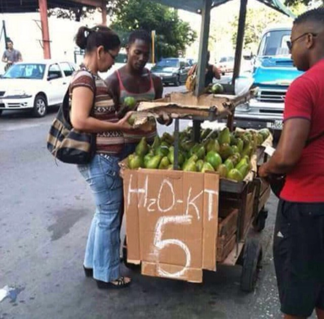

✓ VerificadoAguacate criollo
Por mayor
RD$ 1,850/ Ciento
26% bajo el precio del mercado
Al detalle
RD$ 24/ Unidad
·
mínimo 25 unidades
Mercado Nuevo hoy: RD$ 25.00 por unidad
Puesto en fincaAl contado
Finca El Cerro
L. Guzmán · 55 tareas · Hace 2 días